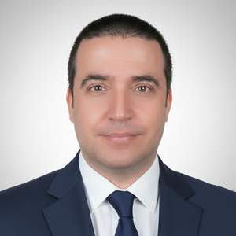
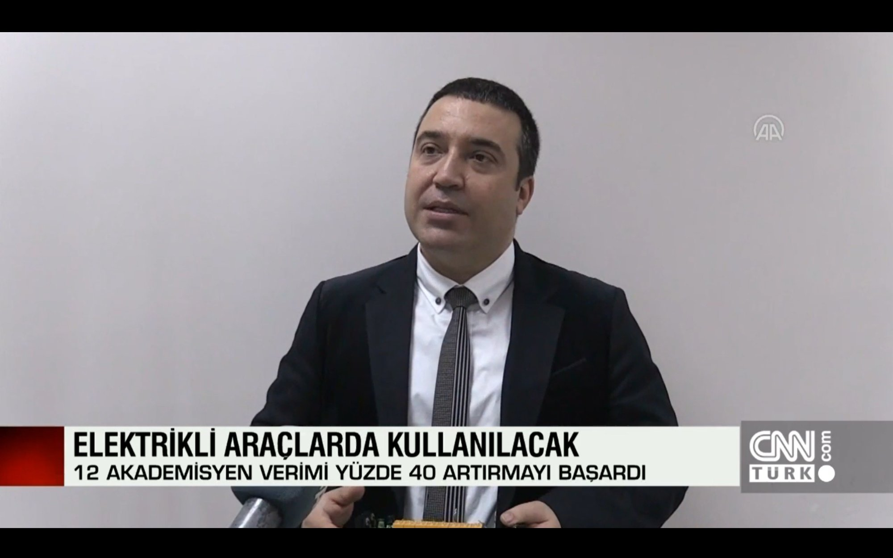
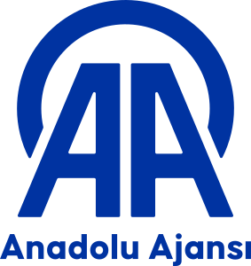
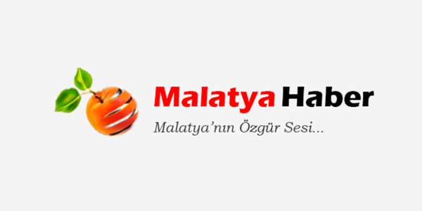

Building brain-inspired computing architectures for real-world engineering problems — from battery management on electric vehicles to fault detection in industrial systems. My work bridges spiking neural networks, FPGA hardware, and edge AI deployment.

My research program sits at the intersection of neuromorphic engineering and industrial intelligent systems, with a focus on making spiking neural networks practical for safety-critical, energy-constrained applications.
Event-driven neural architectures for temporal signal processing, including barrier-hazard dynamics, mixture-of-experts routing, and biologically-grounded information bottleneck theory.
Neuromorphic and hybrid approaches to state-of-charge and state-of-health estimation in lithium-ion batteries for electric vehicles and eVTOL platforms.
Hardware implementation of spiking neural networks on FPGA platforms (Xilinx Kria KV260) for real-time, low-power inference at the edge.
Physics-informed neuromorphic sentinel architectures for cross-domain anomaly detection in battery cells, rotating machinery, SCADA systems, and biomedical signals.
Full list available on Google Scholar and ORCID.
Additional publications in IEEE TIE, IEEE TII, and other Q1 venues. See full list on Google Scholar.
Our EV battery management system research was featured across major Turkish national media outlets in 2021, including television broadcasts and news agencies.
National television coverage of adaptive and modular BMS development with patent filing.

CNN Türk television broadcast featuring BMS prototype demo and laboratory footage.

Original wire story by Turkey's state news agency, syndicated to 10+ national outlets.
Major news aggregator coverage highlighting multi-chemistry BMS patent.
Regional newspaper interview on project timeline and development milestones.

Local news coverage of the EV battery and management system project.
Undergraduate courses in the EEE Department at İstinye Üniversitesi. Instruction in both English and Turkish.
Continuous and discrete-time signals, LTI systems, Fourier and Laplace transforms, sampling theorem, filter design fundamentals.
Diode circuits, BJT and MOSFET device physics, DC biasing, small-signal analysis, single-stage amplifier configurations.
Multi-stage amplifiers, frequency response, feedback topologies, operational amplifier circuits, oscillators, and power amplifiers.
7-course certification program via FİGES BuildUp Academy (2023), covering the full model-based design pipeline:
Invited Speaker: Intelligent Transportation Systems
Public science talk for K-12 students organized by TÜBİTAK (The Scientific and Technological Research Council of Turkey), Darende, Malatya.
Founded an R&D startup focused on sustainable technology solutions. Secured TÜBİTAK 1512 Techno-Entrepreneurship funding and developed two patented technologies.
Led R&D efforts in electric vehicle powertrain and mobility technologies at one of Turkey's major automotive manufacturers.
Complete academic CV with full publication list, grants, and service.
Download CV